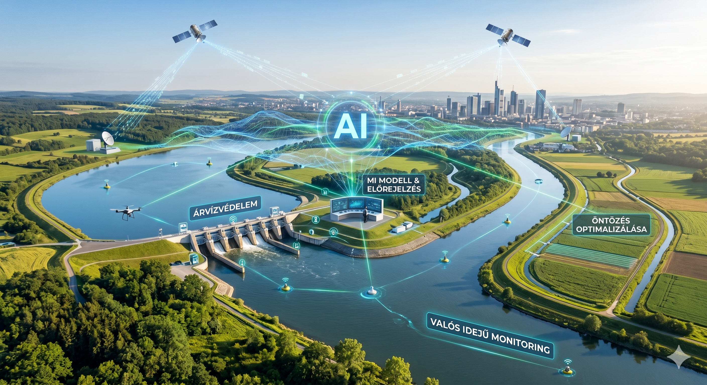

A mesterséges intelligencia alkalmazási lehetőségei a vízgazdálkodásban
A mesterséges intelligencia (MI) a modern vízgazdálkodás egyik legfontosabb technológiai eszközévé válik. Az éghajlatváltozás, a szélsőséges időjárási események, a növekvő vízigény és a vízkészletek egyenetlen eloszlása miatt a hagyományos vízgazdálkodási módszerek önmagukban már sok esetben nem elegendők.
Az MI képes nagy mennyiségű adat gyors elemzésére, előrejelzések készítésére, automatizált döntéstámogatásra és a rendszerek optimalizálására. Alkalmazható szenzorhálózatok, meteorológiai adatok, műholdképek, hidrológiai modellek és valós idejű monitoring rendszerek összekapcsolásával.
1. Mesterséges intelligencia az árvízvédekezésben
1.1 Árvízi előrejelzés
Az MI egyik legfontosabb szerepe az árhullámok előrejelzése. Gépi tanulási algoritmusok képesek:
- csapadékadatok, folyóvízszintek, talajnedvességi adatok, hóolvadási információk és meteorológiai modellek alapján nagy pontosságú árvízi prognózis készítésére.
A hagyományos hidrológiai modellekhez képest az MI gyorsabban dolgozik, folyamatosan tanul az új adatokból, és képes felismerni rejtett összefüggéseket.
1.2 Valós idejű monitoring rendszerek
Az intelligens szenzorhálózatok folyamatosan figyelhetik a gátak állapotát, vízszinteket, szivárgásokat, medermozgásokat, csatornarendszerek terhelését. Az MI automatikusan riasztást küldhet:
- gátszakadás veszélye esetén,
- rendkívüli vízszint-emelkedéskor,
- kritikus infrastruktúra veszélyeztetettségekor.
1.3 Árvízvédelmi döntéstámogatás
A mesterséges intelligencia segíthet mobilgátak optimális telepítésében, víztározók szabályozásában, védekezési erőforrások elosztásában, és kitelepítési döntések támogatásában. Az MI több ezer lehetséges forgatókönyvet képes gyorsan kiértékelni.
1.4 Drónok és műholdas megfigyelés
Képfeldolgozó MI-rendszerek felismerik az elöntött területeket, azonosítják a gátkárosodásokat, követik az árvíz terjedését, és segítik a mentési műveleteket. A drónos felmérések különösen hasznosak nehezen megközelíthető területeken.
2. Mesterséges intelligencia az asszályvédelemben
2.1 Asszály-előrejelzés
Az MI képes hosszú távú meteorológiai mintázatok elemzésére, talajnedvesség előrejelzésére, párolgási folyamatok modellezésére, és mezőgazdasági vízhiány becslésére. Ez lehetővé teszi a korai figyelmeztetést, az öntözési stratégiák időbeni módosítását, és a víztározók előzetes feltöltését.
2.2 Intelligens öntözőrendszerek
Az MI-alapú öntözés csak akkor öntöz, amikor szükséges, és optimalizálja a vízfelhasználást. Figyelembe veszi a növény vízigényét, az időjárást, a talajnedvességet és a párolgást. Ennek eredménye:
- jelentős vízmegtakarítás,
- alacsonyabb energiafelhasználás,
- magasabb terméshozam.
2.3 Vízhiányos területek azonosítása
Műholdképek és MI segítségével felismerhetők a kiszáradó területek, nyomon követhető a vegetáció állapota, és meghatározható a kritikus vízhiány mértéke. Ez különösen fontos a mezőgazdaságban, erdőgazdálkodásban és természetvédelmi területeken.
2.4 Vízkészlet-optimalizálás
Az MI segíthet a tározók vízkészletének kezelésében, vízátvezetések optimalizálásában, valamint a mezőgazdasági és lakossági vízigény összehangolásában.
3. Mesterséges intelligencia a vízgyűjtő-gazdálkodásban
3.1 Komplex vízgyűjtő modellezés
A vízgyűjtők működését rendkívül sok tényező befolyásolja (csapadék, felszínborítás, talajviszonyok, erdősültség, mezőgazdasági használat, urbanizáció). Az MI képes ezen rendszerek komplex modellezésére és az összefüggések feltárására.
3.2 Vízminőség-ellenőrzés
Intelligens rendszerek automatikusan figyelhetik a nitrátterhelést, algásodást, szennyezéseket, oxigénszintet és pH-értéket. Az MI előre jelezheti a vízminőség-romlást, azonosíthatja a szennyező forrásokat, és segítheti a gyors beavatkozást.
3.3 Fenntartható területhasználat
Az MI támogatja a megfelelő földhasználati döntéseket, az erózió csökkentését, a vízvisszatartási lehetőségek feltárását, és a természetes vízmegtartó megoldások tervezését. Például meghatározható, hol célszerű vizes élőhelyet kialakítani, mely területek alkalmasak záportározásra, vagy hol szükséges erdősítés.
3.4 Digitális iker rendszerek
A modern vízgazdálkodásban egyre fontosabbak az úgynevezett „digitális ikrek”, amelyek egy teljes vízgyűjtő virtuális modelljei. Valós időben frissülnek és szimulálják a különböző beavatkozások hatását. Az MI segítségével előre vizsgálható egy árvízvédelmi beruházás hatása, egy új tározó működése vagy a klímaváltozás következményei.
4. A mesterséges intelligencia előnyei a vízgazdálkodásban
- Gyors adatfeldolgozás: Óriási mennyiségű adat elemzése rövid idő alatt.
- Pontosabb előrejelzések: Nagyobb biztonság árvíz és aszály esetén.
- Automatizálás: Kevesebb emberi hiba és gyorsabb reakcióidő.
- Költségcsökkentés: Hatékonyabb üzemeltetés és vízfelhasználás.
- Fenntarthatóság: Vízkészletek hosszú távú megőrzése.
5. Kihívások és korlátok
A mesterséges intelligencia alkalmazása ugyanakkor több kihívással is jár: nagy mennyiségű megbízható adat szükséges, magas beruházási költségekkel jár, kihívást jelent a szakemberhiány és az adatbiztonsági kérdések, valamint a modellek bizonytalansága szélsőséges helyzetekben. Az MI nem helyettesíti teljesen a szakembereket, hanem döntéstámogató eszközként működik.
Összegzés
A mesterséges intelligencia a jövő vízgazdálkodásának meghatározó eleme lehet. Segítségével javítható az árvízvédelem, csökkenthető az aszályok hatása, fenntarthatóbbá válhat a vízgyűjtő-gazdálkodás, és hatékonyabb lehet a vízkészletek kezelése. A következő évtizedekben várhatóan egyre több intelligens vízgazdálkodási rendszer jelenik meg, amelyek valós idejű adatokra, automatizált döntésekre és prediktív modellekre épülnek.

Székhely: Pécs • Működési terület: Dél-Dunántúl (Baranya, Somogy, Tolna)